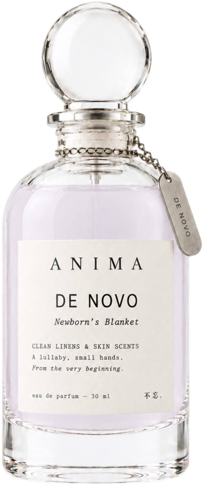
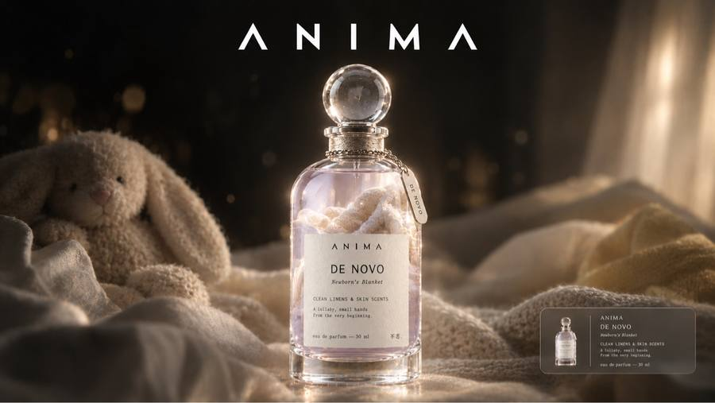

Newborn's Blanket
Narrative Story
If you've ever sung a baby to sleep, you know the smell I'm talking about before I even describe it, because it gets into you in a way nothing else does. I used to sing lullabies to my little brother in the dark — lullabies I made up, half-remembered tunes — and his hands were so small that they would clench around my finger and hold on even in deep sleep, like he was afraid I'd go away if he let go. Then I would press my nose to his blanket and just breathe. It was a scent unlike any other: powdered milk, baby laundry detergent, and something else, something biological and sweet, like the cross between a French bakery and warm sheets straight out of the dryer. Science says a baby's smell lights up the brain's reward circuits and floods it with oxytocin, wiring us to bond and protect, and I believe it, because the scent of his blanket made my chest ache with a ferocity I had no name for, a wanting to stay close and keep him safe that no thought could match. It is safety from the very beginning, before anything needed forgiving, and I still reach for it.
七、新生儿的毯子
我弟小时候，手小得可怜。攥我的手指，只能攥住一根，攥得死紧，指甲掐进肉里，我疼，但不敢抽。他睡觉的时候我给他哼歌，自己瞎编的调，哼着哼着自己也困了。
他的小毯子，我闻过很多次。说不清是什么味，奶粉的甜里带一点腥，洗衣液是婴儿专用的，没什么香精，干干净净的，底下还有一点温热的、毛茸茸的气息，像小动物的肚皮。我那时候不懂什么催产素，只知道把脸埋在那条毯子里，胸口会发紧，紧得想哭。
他现在比我高了。那条毯子不知道还在不在。但有时候在超市闻到婴儿洗衣液的味道，我会站住，手心里好像又攥着那一根小手指，紧的，热的，怕我走。
Notes
Profile: Gentle Lactonic, Powdery Musk
Top: Aldehydes, Rose | Middle: Violet, Iris | Base: White musk, Cedarwood
Occasion
A lullaby, small hands.
Ingredients
ALCOHOL ● PARFUM / FRAGRANCE ● AQUA / WATER / EAU ● BUTYL METHOXYDIBENZOYLMETHANE ● GERANIOL ● CITRONELLOL ● FARNESOL ● EUGENOL ● ALPHA-ISOMETHYL IONONE ● LINALOOL
Please be aware that ingredient lists may change or vary from time to time. Please refer to the ingredient list on the product package you receive for the most up to date list of ingredients.
